Unde au dispărut patru milioane de oameni?
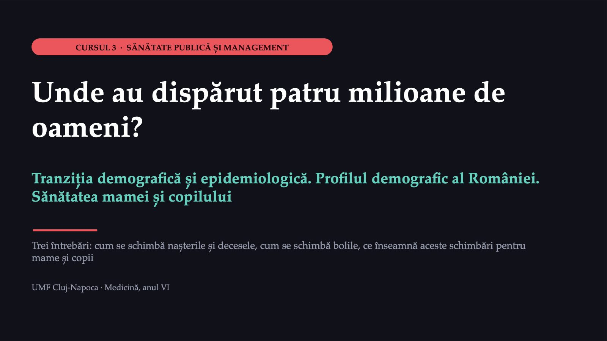
1 / 451990
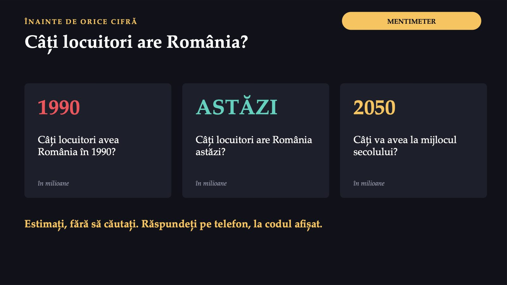
2 / 4523 211 395
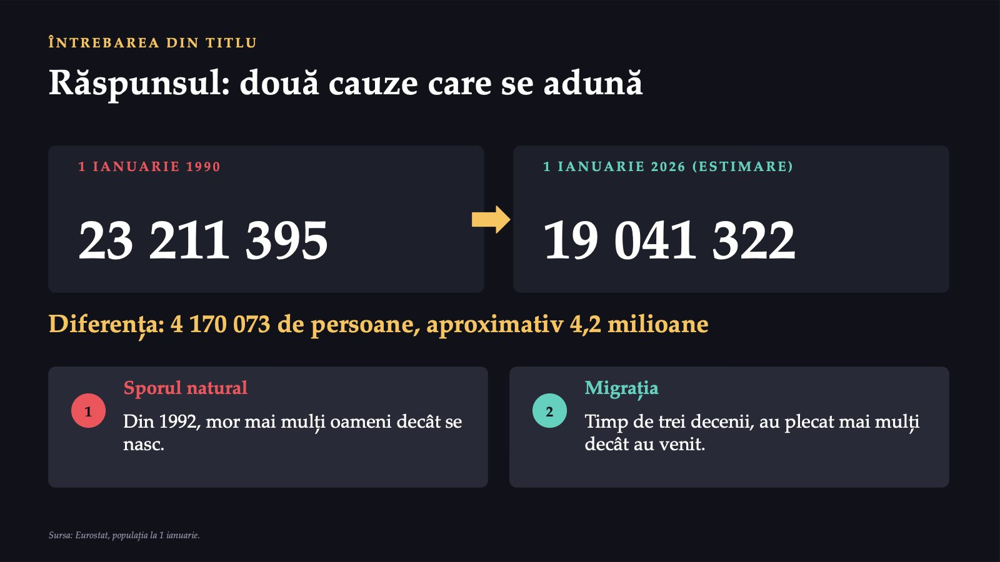
3 / 45Ce se schimbă pe lista dumneavoastră de pacienți?
 4 / 45
4 / 45Tranziția demografică: patru etape
![TERMEN NOU 1 Tranziția demografică: patru etape Trecerea de la mulți născuți și mulți morți la puțini născuți și puțini morți. 1 ambele ridicate mortalitatea fluctuează cu epidemiile și foametea 2 mortalitatea scade decalajul se lărgește, populația crește repede 3 natalitatea scade decalajul se îngustează 4 ambele scăzute populație mai îmbătrânită, aproximativ staționară, fertilitate la nivelul de înlocuire Schemă, fără valori. Coral: natalitatea. Negru: mortalitatea. După Omran și Lesthaeghe; ce urmează după etapa a patra nu face parte din modelul clasic.](diapozitive/C03/005.jpg) 5 / 45
5 / 45−
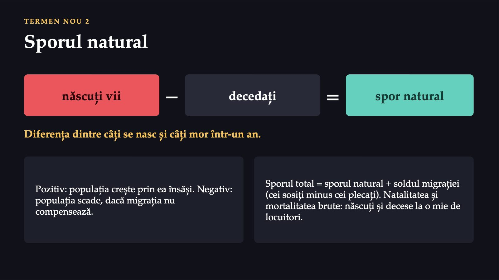
6 / 45Rata totală de fertilitate a României, 1990–2024
![CÂȚI COPII ARE, ÎN MEDIE, O FEMEIE Rata totală de fertilitate a României, 1990–2024 UE, 2024: 1,34 înlocuirea generațiilor: puțin peste 2 1,83 1990 1,27 2002 1,75 2022 1,39 2024 Rata totală de fertilitate: numărul mediu de copii pe care i-ar avea o femeie, dacă ar avea fertilitatea unui an la fiecare vârstă. În 2024, România (1,39) nu are o fertilitate mai mică decât media europeană (1,34). Problema vine din combinația cu emigrarea și cu mortalitatea. Sursa: Eurostat, rata totală de fertilitate; valorile ultimilor trei ani sunt estimări.](diapozitive/C03/007.jpg) 7 / 45
7 / 45Modelul nu este o lege
![LIMITELE MODELULUI Modelul nu este o lege TREI VARIANTE, DUPĂ OMRAN clasică: în aproximativ două secole accelerată: Japonia întârziată: mortalitatea a scăzut abia în secolul trecut Modelul nu spune cât durează etapele, nu garantează că natalitatea scade și nu include migrația. A DOUA TRANZIȚIE · LESTHAEGHE ȘI VAN DE KAA Fertilitatea rămâne sub nivelul de înlocuire, căsătoria se amână, se schimbă valorile. 23,6 → 27,2 ani vârsta medie la prima naștere, 2000 → 2024 (UE 2024: 29,9) 32,1% nașteri în afara căsătoriei, 2024 (UE: 41,1%)](diapozitive/C03/008.jpg) 8 / 45
8 / 45Din ce an mor în România mai mulți oameni decât se nasc?
9 / 45Din 1992, mor mai mulți oameni decât se nasc
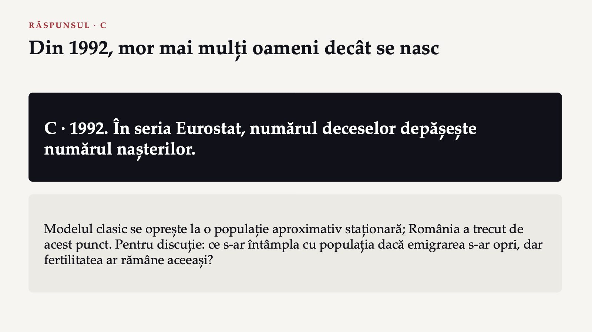
10 / 45Omran: trei stadii ale tranziției epidemiologice
![TRANZIȚIA EPIDEMIOLOGICĂ · OMRAN, 1971 Omran: trei stadii ale tranziției epidemiologice 1 Epoca epidemiilor și a foametei mortalitate mare și fluctuantă, viață scurtă 2 Epoca pandemiilor în retragere vârfurile epidemice se răresc, mortalitatea scade 3 Epoca bolilor degenerative și a celor produse de om bolile cronice devin principalele cauze de deces Cele mai mari câștiguri: copiii și femeile tinere, cei mai vulnerabili la infecții și la riscurile sarcinii. Tranziția epidemiologică merge împreună cu cea demografică și interacționează cu factorii demografici, economici și sociali.](diapozitive/C03/011.jpg) 11 / 45
11 / 45Bolile cronice apar la vârste tot mai înaintate
![DUPĂ OMRAN Bolile cronice apar la vârste tot mai înaintate AL PATRULEA STADIU · OLSHANSKY ȘI AULT, 1986 Bolile degenerative nu dispar, dar ucid la vârste tot mai înaintate. Speranța de viață continuă să crească, deși cauzele de deces sunt aceleași. SINTEZA DIN 2014 · SANTOSA ȘI COLAB. Omran însuși a recunoscut ulterior unul și, posibil, două stadii noi. În al patrulea, speranța de viață continuă să crească. Al cincilea, cu boli noi și reapariția unor boli vechi, fusese descris deja de alți autori. Aceste extensii nu sunt dezvoltate în curs.](diapozitive/C03/012.jpg) 12 / 45
12 / 45Ce descrie cel mai bine al patrulea stadiu al tranziției epidemiologice?
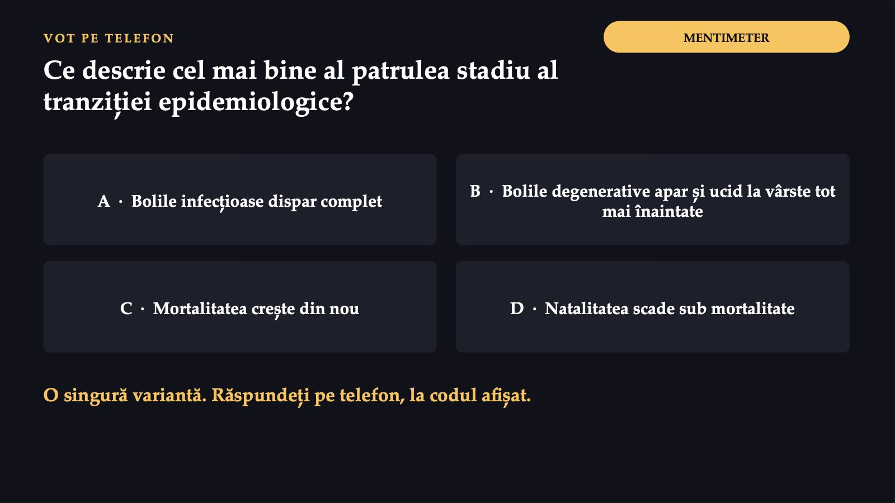
13 / 45Bolile degenerative ucid la vârste tot mai înaintate
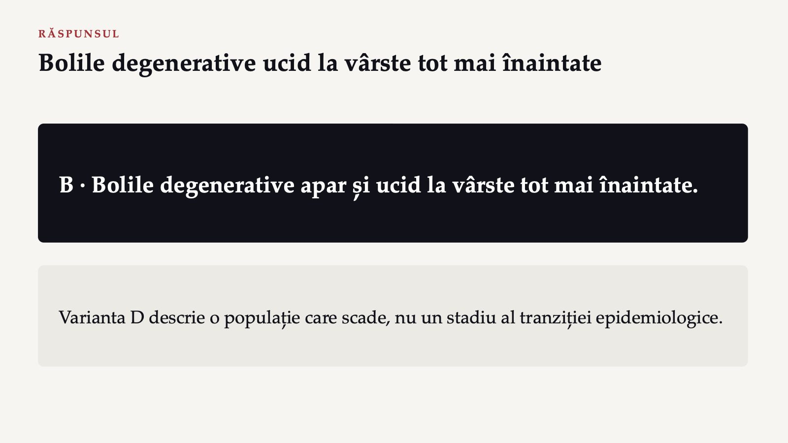
14 / 4554,0%
 15 / 45
15 / 451967: nașterile aproape se dublează într-un an
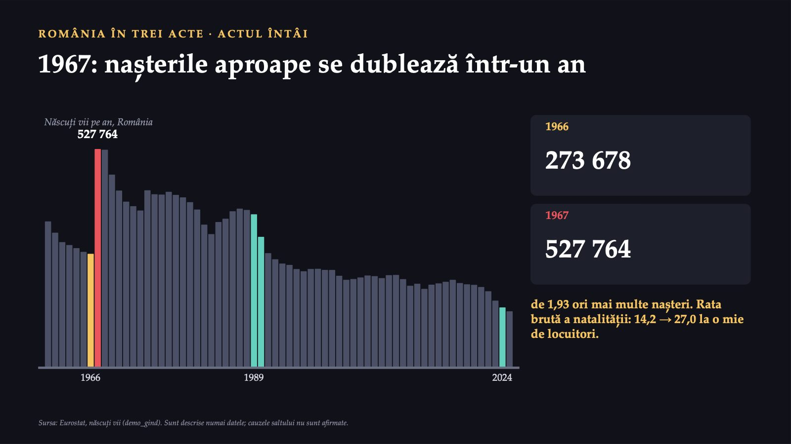
16 / 45118
![CAZ CONSTRUIT PENTRU DISCUȚIE O noapte de iarnă, la sfârșitul anilor ’80 GARDA O femeie de treizeci și cinci de ani, mamă a patru copii, ajunge la spitalul județean cu febră, dureri abdominale și sângerare, după o intervenție făcută acasă. Medicul de gardă recunoaște o complicație pe care o vede aproape în fiecare săptămână. MORTALITATEA MATERNĂ · ROMÂNIA, 1990 118 decese materne la 100 000 de născuți vii, estimarea Organizației Mondiale a Sănătății pentru 1990. Cazul ilustrează, la nivelul unei gărzi, ce înseamnă acest nivel. Sursa: OMS, serie estimată. Cazul este construit pentru discuție.](diapozitive/C03/017.jpg) 17 / 45
17 / 45Natalitatea scade, apoi mortalitatea o depășește
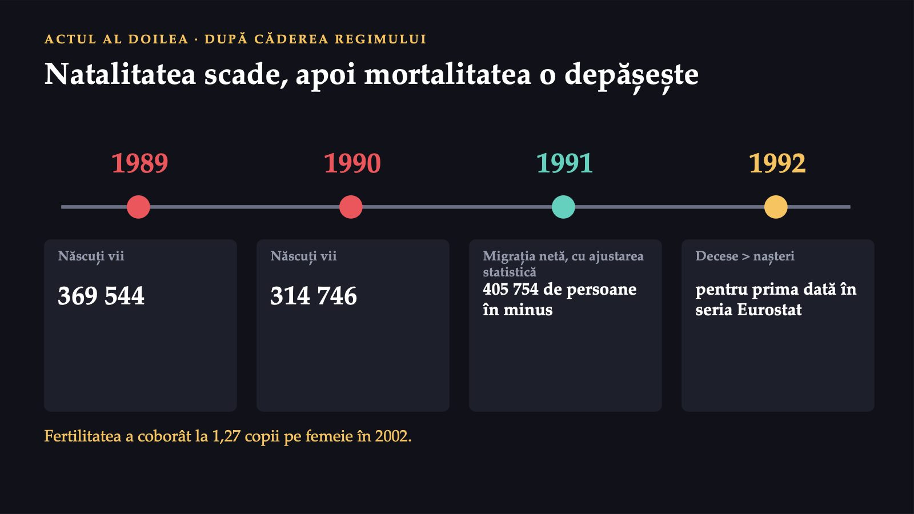
18 / 4527,2%
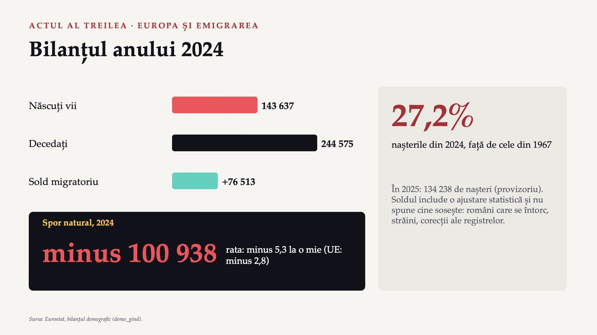
19 / 45Speranța de viață la naștere, 2024
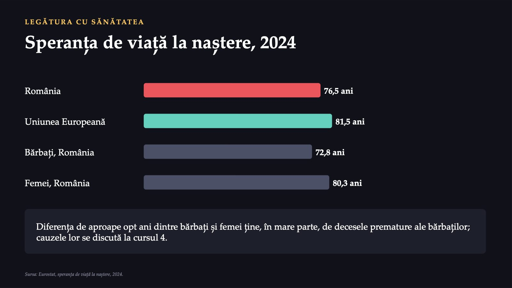
20 / 45Trei tipuri de piramidă a vârstelor
![CITIM UN GRAFIC, FĂRĂ CALCULE Trei tipuri de piramidă a vârstelor Expansivă (progresivă) baza cea mai largă, se îngustează regulat spre vârf: fiecare generație care se naște este mai mare decât cea dinainte Staționară bare aproape egale până la vârstele înaintate: nașterile au rămas aproximativ aceleași de la o generație la alta Constrictivă (regresivă) baza mai îngustă decât mijlocul: copiii născuți în ultimii ani sunt mai puțini decât generația părinților lor Scheme, fără valori; tipurile din fișa disciplinei și din lucrarea practică 2, unde se construiește piramida pe datele unui județ.](diapozitive/C03/021.jpg) 21 / 45
21 / 45Care dintre aceste trei piramide este a României de astăzi?
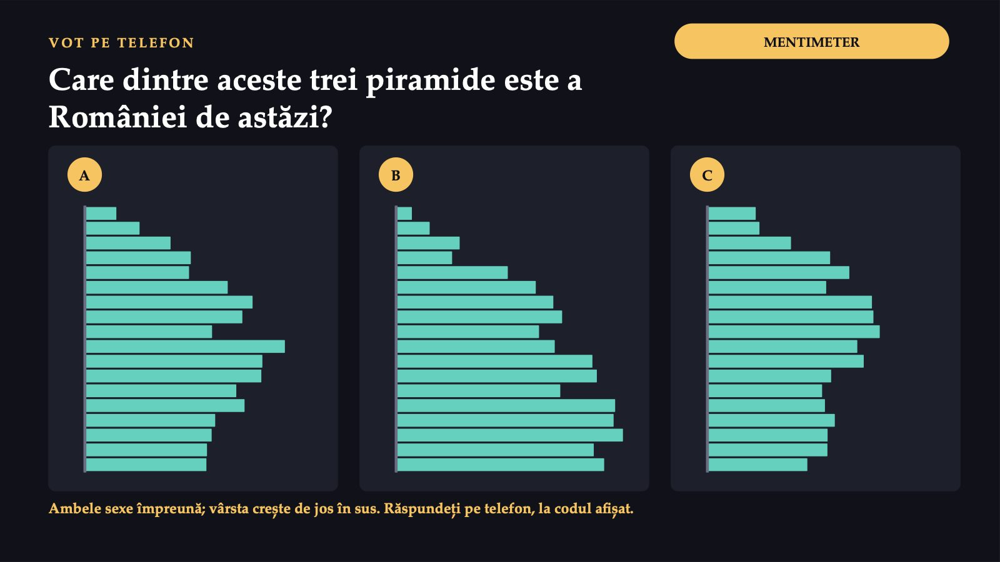
22 / 45Piramida de astăzi: constrictivă, cu neregularități
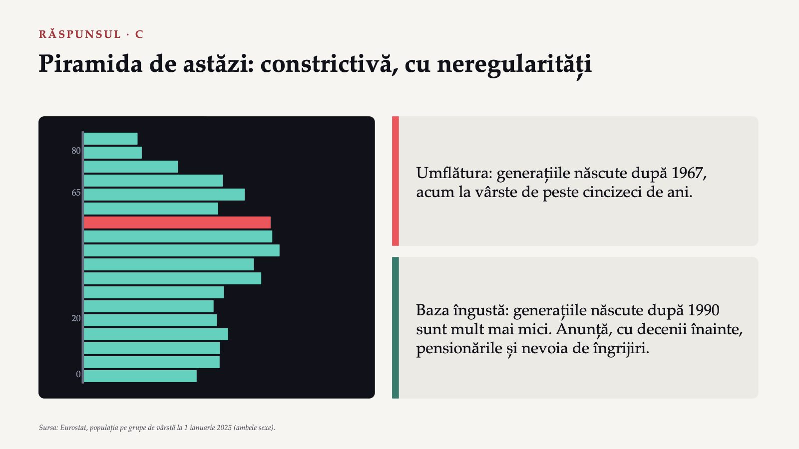
23 / 45România față de Uniunea Europeană
![ÎMBĂTRÂNIREA POPULAȚIEI · 2025 România față de Uniunea Europeană România UE Persoane de 65 de ani și peste 20,3% 22,0% Persoane de 80 de ani și peste 4,5% 6,2% Vârsta mediană 44,1 ani 44,9 ani Raportul de dependență al vârstnicilor 31,6 34,5 Nu mai îmbătrânită decât media europeană, dar îmbătrânește repede. Persoanele de 65 de ani și peste erau 10,3% în 1990. Raportul de dependență al vârstnicilor: 15,6 în 1990, 31,6 în 2025. Sursa: Eurostat (demo_pjanind). Raportul de dependență al vârstnicilor (numit și rata de dependență): persoane de 65+ la o sută de persoane de 15–64 de ani.](diapozitive/C03/024.jpg) 24 / 45
24 / 45131,3
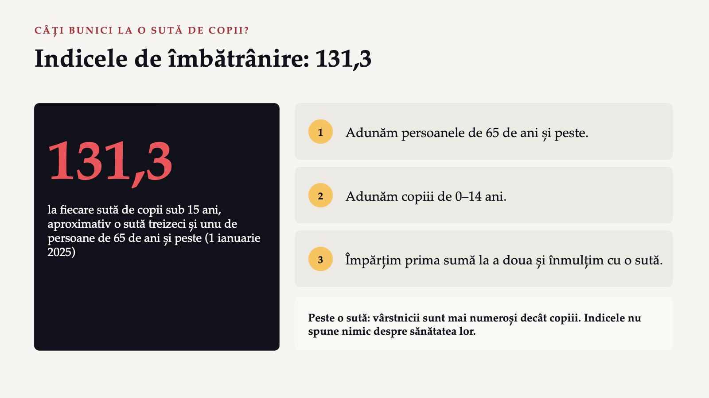
25 / 45Mai mulți vârstnici, mai puține persoane active
![CONSECINȚE PENTRU SERVICIILE DE SĂNĂTATE Mai mulți vârstnici, mai puține persoane active Pacienții mai multe boli în același timp, mai multe medicamente, îngrijire de lungă durată Finanțarea mai puține persoane active contribuie; o parte dintre îngrijitorii informali lucrează în străinătate Specialitățile mai multă medicină de familie, geriatrie, îngrijiri paliative, recuperare; pediatria și obstetrica, cu mai puțini pacienți, dar cu exigențe mai mari Imaginea „4-2-1” (patru bunici, doi părinți, un copil) este o ilustrare, nu o cifră măsurată pentru România.](diapozitive/C03/026.jpg) 26 / 45
26 / 45Ce înseamnă îmbătrânirea populației pentru specialitatea dumneavoastră?
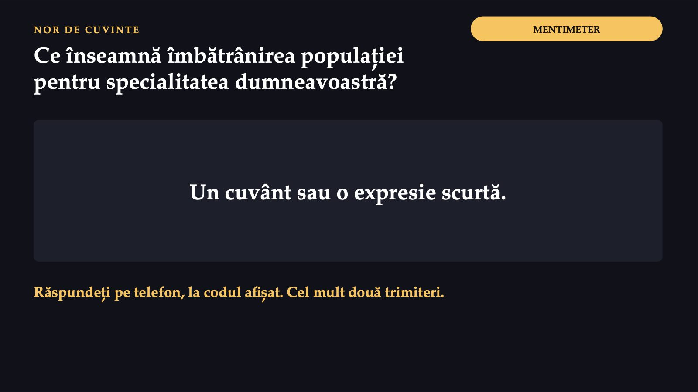
27 / 45Trei căi prin care plecarea ajunge în cabinet
![MIGRAȚIA ȘI SĂNĂTATEA Trei căi prin care plecarea ajunge în cabinet 1 Demografică pleacă adulții tineri: nașterile viitoare scad, îmbătrânirea se accelerează 2 Familială copiii rămași cu bunicii și vârstnicii rămași singuri au nevoi de îngrijire 3 Profesională medici și asistenți formați în România lucrează în alte state; cei rămași sunt inegal distribuiți Ce nu știm: statisticile europene nu publică soldul migrației pe profesii, iar estimările despre medicii plecați nu au putut fi confruntate cu o sursă publicată.](diapozitive/C03/028.jpg) 28 / 45
28 / 45Populația României, scenariul de bază
![UN SCENARIU DE TIP „CE-AR FI DACĂ” Populația României, scenariul de bază 19 041 322 2026 estimare 18 706 751 2030 17 896 346 2040 17 148 348 2050 16 333 523 2060 14 407 573 2100 În 2050: scădere de 10,0% față de 2025; persoane de 65+: 27,4%; raportul de dependență al vârstnicilor: 46,4. O proiecție nu este o prognoză: arată ce s-ar întâmpla dacă ipotezele s-ar adeveri. Testele de sensibilitate schimbă câte o ipoteză (migrație nulă, fertilitate mai mică). Migrația: ipoteză de urmărit. Sursa: Eurostat, EUROPOP2025.](diapozitive/C03/029.jpg) 29 / 45
29 / 4517 148 348
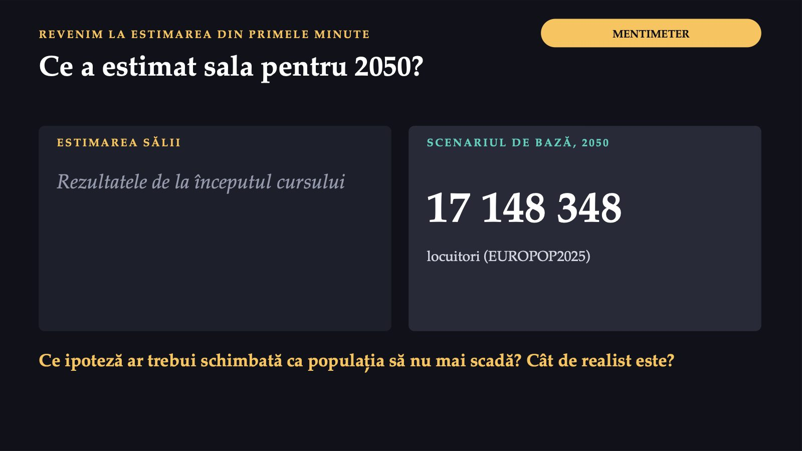
30 / 45Mortalitatea infantilă
![TERMEN NOU 3 Mortalitatea infantilă Câți copii dintr-o mie născuți vii mor înainte de a împlini un an. neonatală · primele 28 de zile postneonatală · de la 28 de zile la un an naștere un an Cauzele deceselor neonatale, după OMS (la nivel mondial): nașterea prematură, complicațiile nașterii (asfixia și traumatismul la naștere), infecțiile neonatale, anomaliile congenitale. Cauzele deceselor postneonatale: nu există, în aceste note, o sursă care să le dea. Repartiția deceselor infantile pe cauze, pentru România, nu a fost extrasă dintr-o sursă oficială.](diapozitive/C03/031.jpg) 31 / 45
31 / 45Ce parte dintre decesele neonatale au loc, după OMS, în prima săptămână de viață?
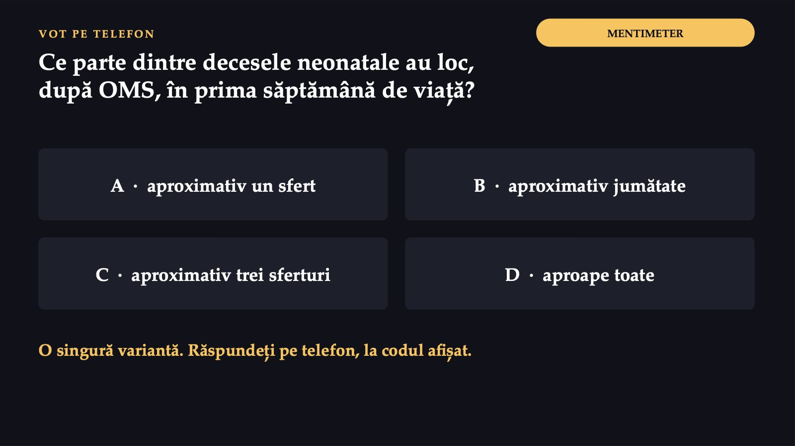
32 / 45Mortalitatea infantilă: de 1,9 ori media europeană
![ROMÂNIA ȘI UNIUNEA EUROPEANĂ · 2024 Mortalitatea infantilă: de 1,9 ori media europeană România 6,6 Uniunea Europeană 3,5 DIN CELE 6,6 ALE ROMÂNIEI neonatală 3,7 postneonatală 2,9 Componenta postneonatală este aproape jumătate din total. Ce o explică? Cifrele nu spun: ar fi nevoie de repartiția deceselor pe cauze și pe locul în care au avut loc. În 2000: 18,6. Scădere de 64,5% până în 2024. Estimarea UN IGME (UNICEF, OMS) pentru 2024: 6,0, cu interval de incertitudine 5,7–6,3. Altă definiție (probabilitate de deces) și altă metodă (model statistic): cele două valori nu se folosesc împreună în aceeași comparație. Sursa: Eurostat, mortalitatea infantilă la o mie de născuți vii (demo_minfind); UN IGME.](diapozitive/C03/033.jpg) 33 / 45
33 / 457,3
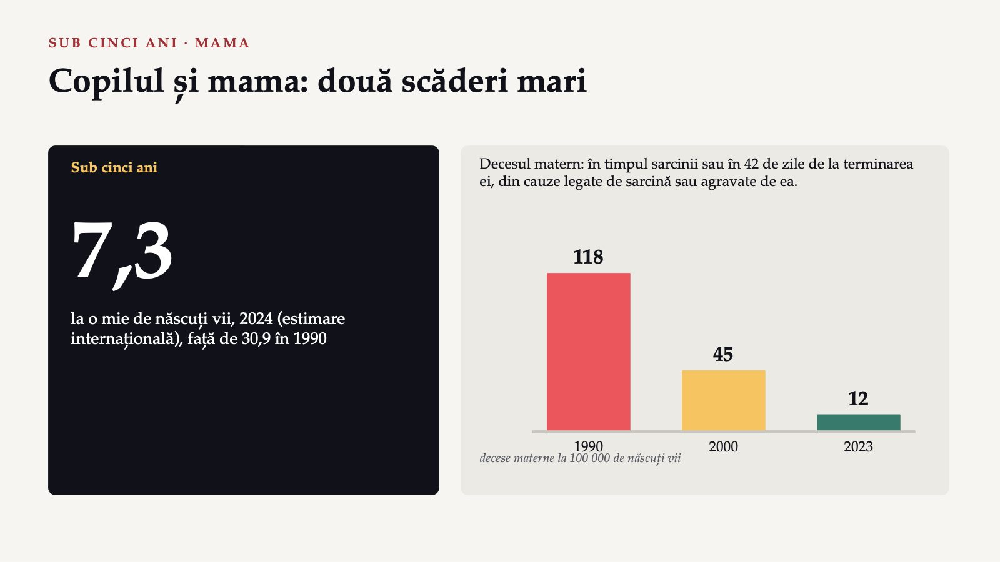
34 / 45Avortul: 458,3 în 2013, 206,8 în 2024
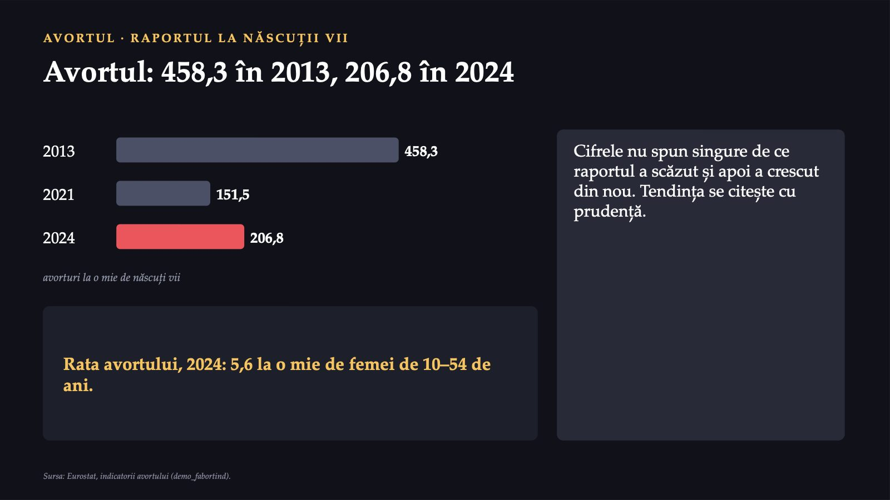
35 / 45Ce pondere din nașteri au mame sub 20 de ani, în 2024?
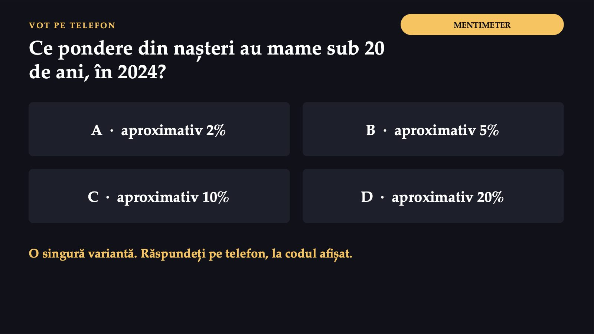
36 / 459,5%
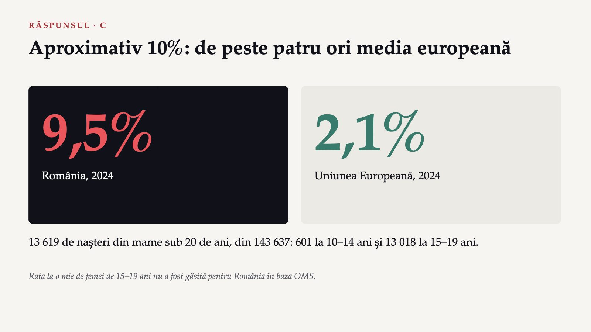
37 / 45Vaccinarea a scăzut sub nivelul de dinainte de pandemie
![DE LA NAȘTERE LA CABINET Vaccinarea a scăzut sub nivelul de dinainte de pandemie DTP3, 2019 88% DTP3, 2025 66% Rujeolic 1, 2019 90% Rujeolic 1, 2025 66% Rujeolic 2, 2025 68% România este departe de nivelul pe care îl avea înainte de pandemie. Prematuritatea (OMS): naștere înainte de 37 de săptămâni complete. La nivel mondial, complicațiile ei sunt principala cauză de deces sub 5 ani; trei sferturi dintre aceste decese ar putea fi prevenite. Primele 1 000 de zile, de la concepție la doi ani: efectele lor pe termen lung nu sunt dezvoltate aici. Legătura cu bolile cronice ale adultului: cursul 4. Sursa: OMS și UNICEF.](diapozitive/C03/038.jpg) 38 / 45
38 / 45Un indicator, o intervenție de cabinet și una de sistem
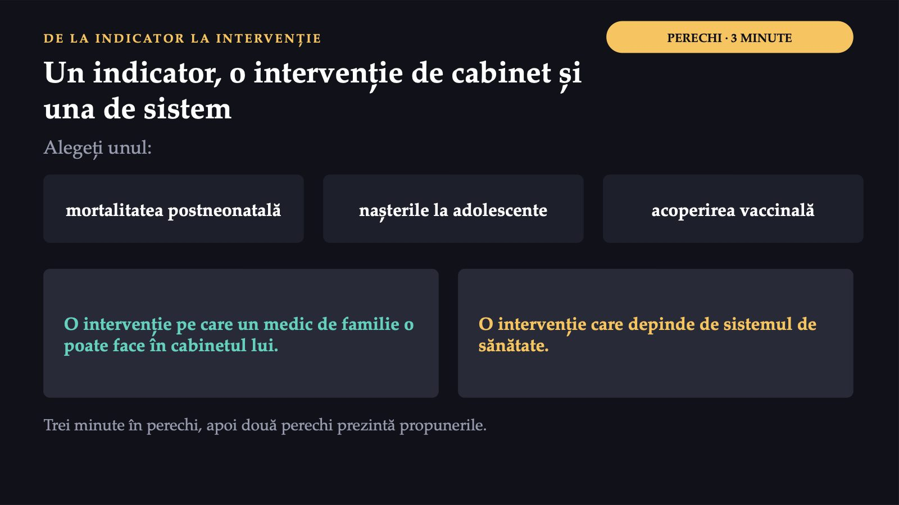
39 / 45ADEVĂRAT
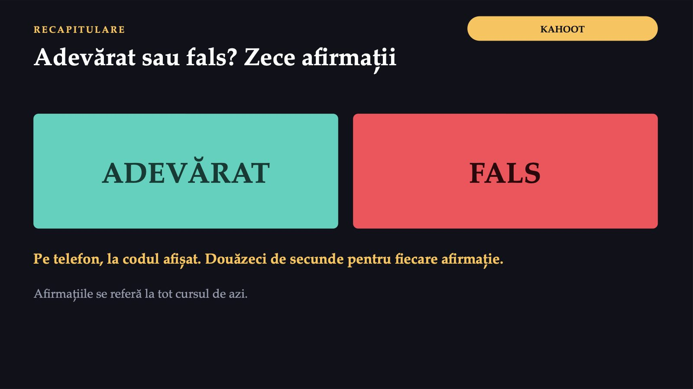
40 / 45Adevărat sau fals: răspunsurile
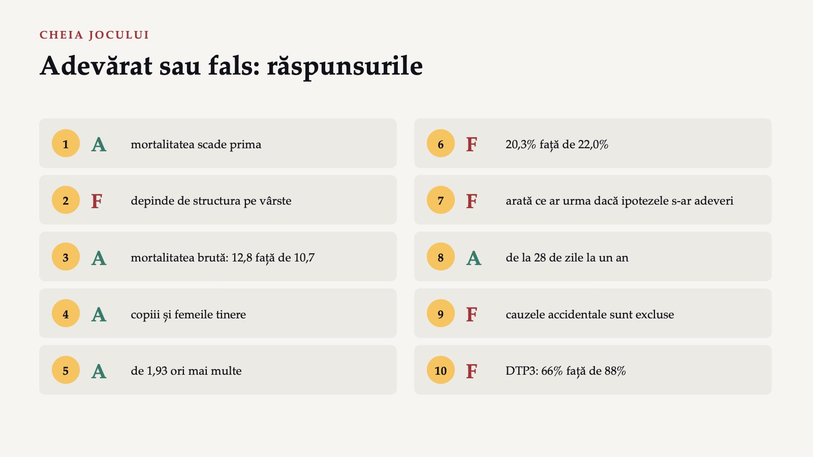
41 / 45România și Uniunea Europeană, pe scurt
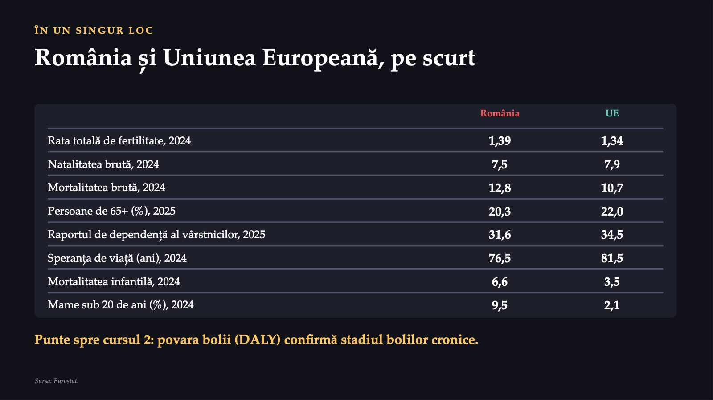
42 / 45Ce faceți diferit, de mâine
![DE MÂINE, CA MEDICI Ce faceți diferit, de mâine 1 Citiți orice cifră demografică cu anul, sursa și, pentru proiecții, scenariul. 2 La o mortalitate infantilă mare, întrebați care componentă este mare și ce date pe cauze există; abia apoi, unde trebuie îmbunătățită îngrijirea. 3 La fiecare copil, verificați carnetul de vaccinări; la o adolescentă însărcinată, gândiți-vă la riscurile ei medicale, la contracepție, la școală și la siguranța ei. 4 Pacienții dumneavoastră vor fi, peste douăzeci de ani, mai bătrâni, mai puțini și cu mai multe boli în același timp.](diapozitive/C03/043.jpg) 43 / 45
43 / 45Cinci idei din cursul de azi
![DE REȚINUT Cinci idei din cursul de azi 1 Tranziția demografică: de la natalitate și mortalitate ridicate la scăzute. 2 Tranziția epidemiologică: de la infecții la boli cronice, la vârste înaintate. 3 România pierde populație: mai multe decese decât nașteri, plus emigrarea. 4 Îmbătrânirea: mai multe boli cronice, mai puține persoane de vârstă activă. 5 Mortalitatea infantilă și cea maternă au scăzut mult; cea infantilă rămâne de aproape două ori peste media UE. Răspunsul la titlu: o populație mai mică și mai bătrână are nevoie de alt sistem de sănătate.](diapozitive/C03/044.jpg) 44 / 45
44 / 45Trei întrebări pentru final
 45 / 45
45 / 45Săgeți sau spațiu: navigare · O: vedere de ansamblu · N: notele prezentatorului · F: ecran complet · Esc: închidere